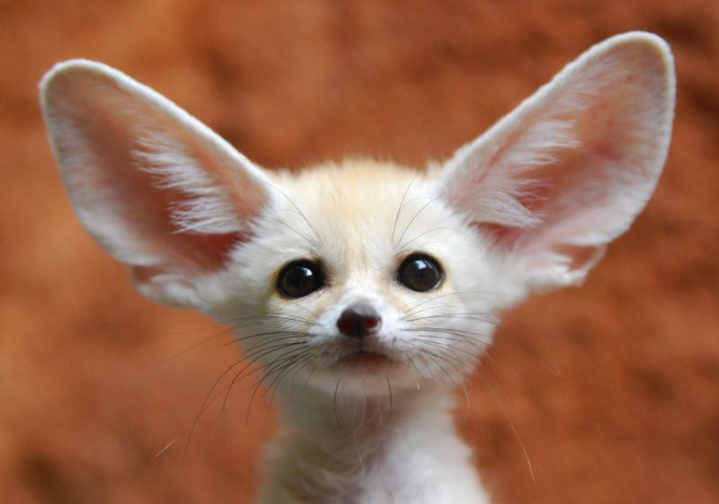

The Corals
Corals are animals, not plants, Dec 15, 2021
Some are thought to resemble deer antlers, trees, giant fans, brains, and honeycomb.
Corals were around at the time of the dinosaurs - that's about 500 million years ago! Some of the corals we see today have taken as much as 50 million years to form. This is one of the reasons we should worry when corals die, their population will not be recreated within a human lifetime.
Octopus
All octopuses have venom, Dec 15, 2021
Octopuses have decentralized brains and the majority of its neurons live in the arms. Those neurons assist the arms to independently touch, taste, and have their own basic motions giving the impression that octopus has nine brains.
Octopuses can change their skin colors in the blink of an eye! The 'chromatophores', special cells of the octopus, are the reason behind their amazing transformation. These special cells beneath their skin have thousands of colors
The Fennec Fox
The fox of the desert, Dec. 15 2021.
Fennec foxes have extraordinary hearing to locate underground prey.
Their thick fur helps to insulate them from the cold desert nights. Their sandy coloration helps to reflect heat, and also provides excellent camouflage. Fennec foxes also have thick fur on the soles of their feet, which insulate against the hot sand of the desert. This extra fur on the soles of their feet also afford them excellent traction in the loose sand.
The Fennec Fox
The fox of the desert, Dec. 15 2021.
Fennec foxes have extraordinary hearing to locate underground prey.